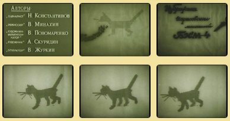
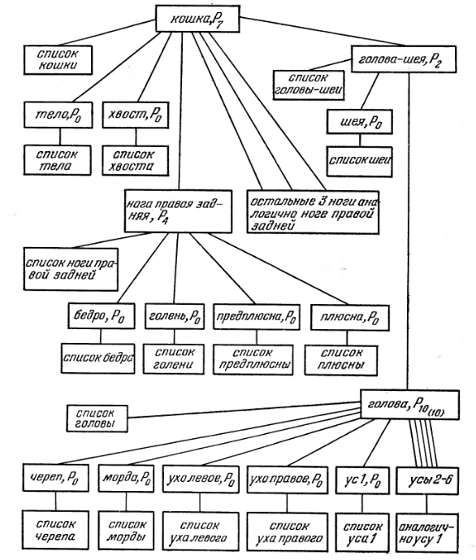

В 2020 году в очередной раз выяснилось, что с сервиса Youtube.com снова пропало историческое видео с первым в истории 3D-мультфильмом, сделанным советскими учеными Н. Н. Константиновым, В. В. Минахиным, В. Ю. Пономаренко в 1968 году. Мультфильм был покадрово распечатан машиной БЭСМ-4 на бумаге с помощью принтера, а затем покадрово переснят на кинопленку.

Спустя некоторое время, в 1974 году, в журнале "Проблемы кибернетики" (выпуск 28), за авторством этих ученых была опубликована статья 1972 года "Программа, моделирующая механизм и рисующая мультфильм о нём". В ней авторы мультфильма объединили свои наработки в области симуляции движения живых существ и механизмов, а так же дали удивительно точный прогноз того, как будут развиваться компьютерные системы создания 3D-анимации.
В статье дан полный математический аппарат того, как была сделана анимация животного на экране. Авторами было введено понятия "брусок", которое в последствии, в языке 3D-аниматоров, стало называться "костью", а сама кинематика движения стала называться "скелетной анимацией".
Судя по тексту статьи, "Кошечка" была нарисована с применением методов прямой и инверсной кинематики. Прямая кинематика была использована при моделировании туловища и верхних частей кошки. Для создания модели кошки было создано следующее дерево:

Авторы пишут, что дерево позволяет легко переносить систему координат от основного элемента на подчиненные элементы. Таким образом, поворот/движение головы автоматически приводит к соответствующему правильному повороту/движению мордочки, ушей и усов.
Элементы инверсной кинематики были применены для симуляции движения ног кошки. Вначале были заданы законы перемещения кончика каждой лапы, на основе координат которого расчитывались координаты суставов кошачьей ноги.